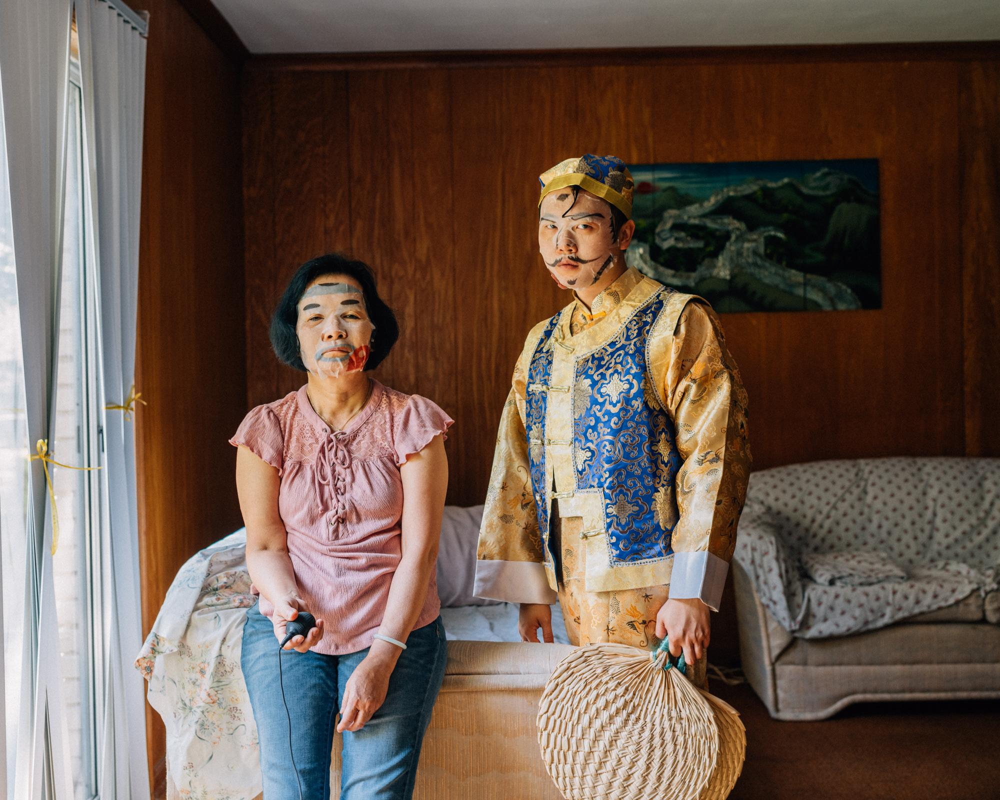
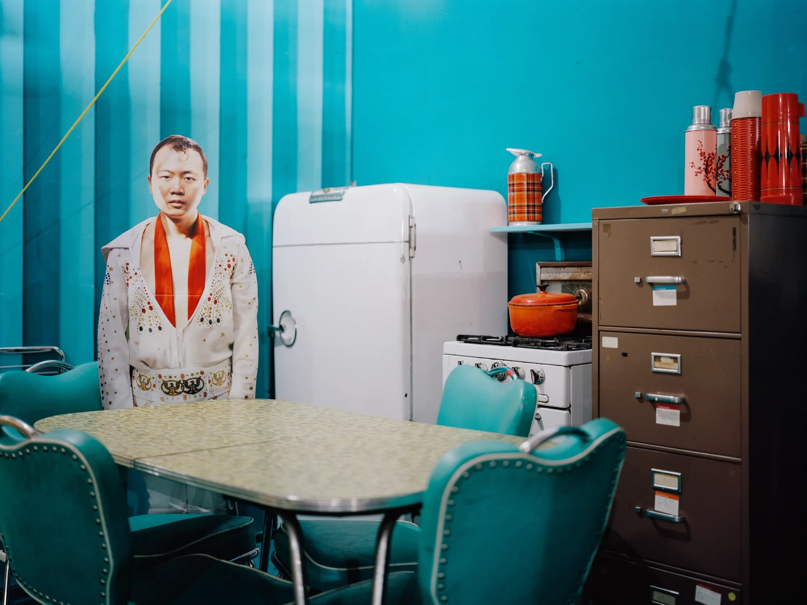
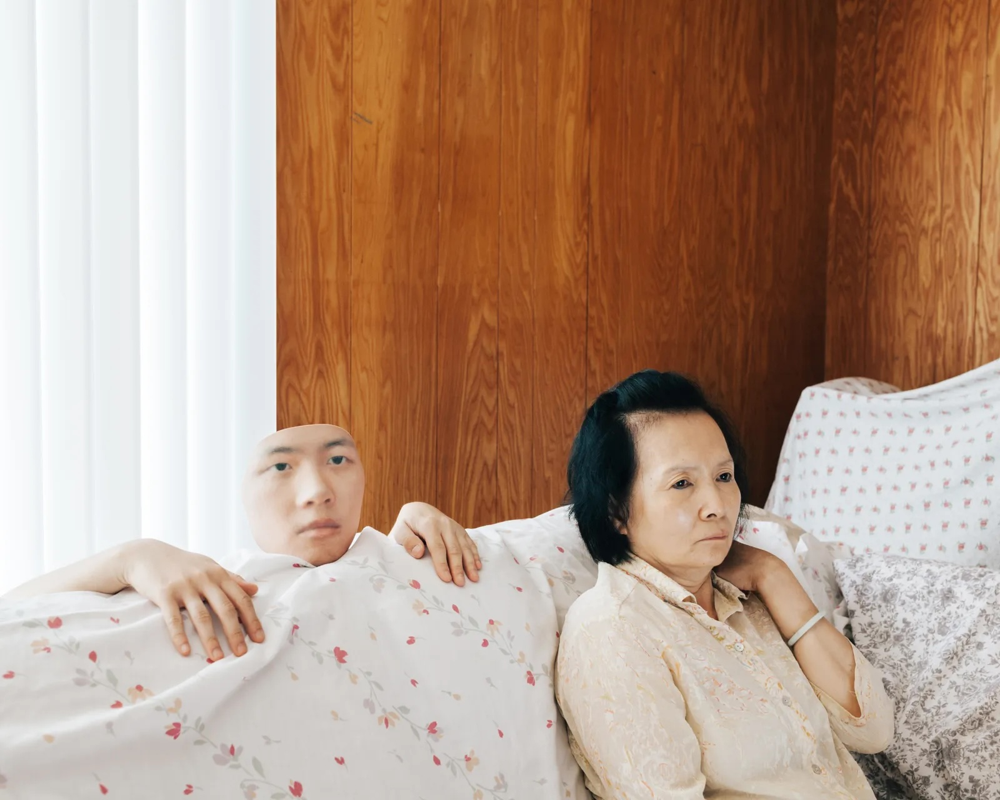

In class we looked at Tommy Kha’s photography as a way of thinking about
how borderlands and diasporic lives are pictured. I chose three images
from different series to place alongside my grandmother’s oral history.
Instead of illustrating the podcast, these photographs help me think
about performance, fragmentation, and belonging in my own project: how a
body is framed, how family appears as both comfort and complication, and
how a home landscape can feel both intimate and estranging.

1. May: A Costume Drama, Whitehaven, Memphis (2019)
In this photograph, Kha stands in ornate costume and makeup
beside his mother, whose face is also painted but whose clothing
is casual and contemporary. They share the frame, but their
presentations do not match. The wood-paneled room and ordinary
sofa insist on domestic space, while the painted faces belong to a
different visual register altogether. The result is a portrait of
family that refuses to settle into a single story: neither pure
tradition nor pure assimilation.
I read this image against my grandmother’s stories about the
Valley as “a happy place” where everyone seemed to get along.
Kha’s picture suggests that the intimacy of home always contains
negotiation over how one appears. The makeup is literal
performance, but it also points to the quieter negotiations my
grandmother describes: how people in Brownsville and Matamoros
adjusted their language, their gestures, and their habits to move
between different expectations. Both works refuse a simple divide
between inside and outside. The house is a stage and a shelter at
once, just as the border in my project is both a line on a map and
the backdrop for ordinary life.

2. Constellations VIII/Golden Fields (2020)
In Constellations VIII/Golden Fields, Kha appears only as a life-size cardboard
cutout of himself in a white Elvis jumpsuit, standing in a bright
turquoise room. Retro chrome chairs circle a laminate table, a
white refrigerator and small stove sit against the wall, and a
beige metal file cabinet crowds the frame. The setting is saturated
with midcentury Americana, yet his body is literally flat, a prop
that can be moved wherever the set demands. The picture stages a
gap between the official image of the South and the person who is
trying to live inside that image.
My project wrestles with a similar gap. The national image of the
United States–Mexico border focuses on spectacle and crisis, while
my grandmother’s stories focus on shrimping trips, Dia de los
Muertos, and neighbors who “just talked to somebody and got it
figured out.” Kha’s Elvis room helps me think about how local
people become background for larger fantasies. Boca Chica becomes
a launch site for Mars; Brownsville becomes a symbol in policy
debates. In both cases, a familiar room is repurposed for someone
else’s story, and the people who know it best risk being turned
into cutouts in their own landscape.

3. Headtown V, Whitehaven, Memphis (2017)
In Headtown V, Kha’s mother sits on a couch, staring ahead
as if watching a television we cannot see. Behind her, a printed
cutout of Kha’s head and hands rises from behind the couch,
wrapped in the same floral fabric that covers the cushions. He is
present and not present at the same time, both part of the
upholstery and sharply distinct from it. The photograph turns the
living room into a scene of doubled attention: her gaze on the
unseen screen, his fixed stare toward the camera, both contained
by the same patterned fabric.
This double presence resonates with my position in the podcast. My
voice shares the room with my grandmother, asking questions and laughing
with her, but I am also outside her Brownsville, looking back at a
world that no longer exists in the same form. Like Kha’s cutout, I
am embedded in the family scene and slightly displaced from it. His
photograph helped me think about the interview as more than
information. It is also a record of how descendants hover at the
edge of their elders’ landscapes, trying to understand a place
that feels like home even as it has been rearranged by time,
development, and new forms of border control.